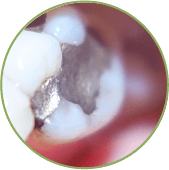
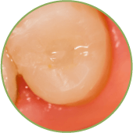
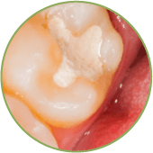
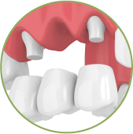
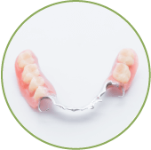
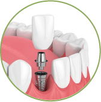

一般牙科
聽到一般牙科就覺得沒什麼大不了的、又不是什麼困難治療，然而，看似簡單的一般牙科治療其實非常重要，千萬別小看它喔！通常，一般牙科會由同一位醫師為個別病患進行完整治療，藉由長期的治療關係更能詳盡的了解病患狀況，讓病患保持良好的口腔保健習慣，預防口腔疾病並降低咬合不正，同時定期口腔檢查，及早發現問題並及早解決，使病患的牙齒獲得最完善的照顧，可以說，一般牙科是確保每位病患口腔健康的基石，若沒有了一般牙科的預防與保健，原先只是牙齒的小問題也會演變成嚴重的口腔疾病喔！
以下，便讓向日葵美學帶您認識與生活息息相關的牙科治療項目：
齲齒填補
Cavity Fillings
齲齒填補其實就是我們俗稱的「補蛀牙」。當牙齒的硬組織(琺瑯質、象牙質)被酸破壞，脫鈣而形成一個孔洞即是「蛀牙」。蛀牙是最為常見的一種牙科疾病，也是臨床治療中最常見的項目。
-銀粉-
物理性質穩定
含重金屬離子
牙齒沉澱變黑
-全瓷嵌體-
良好的物理強度
抗磨耗性與生物相容性佳
透光性與真牙相差無幾
-樹脂-
最常見補牙材質
膨脹收縮會產生縫隙
顏色與真牙相近
假牙贗復
Prosthodontics
「做假牙」
—也就是贗復牙科
若長時間缺牙而一直沒有裝戴假牙，相鄰的牙齒會漸漸向缺牙的空間傾倒，牙齒也會因失去對咬牙而過度長出，最後造成齒列不齊，將來若想做假牙，往往困難重重且事倍功半，因此若有缺牙狀況應依照醫師的指示，盡早排除缺牙狀況，也就是俗稱的「做假牙」。
藉由人工取代品修復自然牙或取代缺損的牙齒，以恢復口腔功能與健康。當患者決定進行假牙贋復後，牙醫會依據個人狀況及牙齒不同程度的缺損，挑選最適的假牙贗復物，一般來說假牙贗復分為以下三類：
-固定假牙-
若患者本身有嚴重蛀牙經過根管治療，或有少數缺牙的情況，醫師會建議製作牙冠或牙橋來恢復口腔功能，由於製作完成的牙冠或牙橋是黏著於本身的牙齒上，因此稱為固定式假牙。
-活動假牙-
通常當患者缺牙數較多或全口無牙的情況下，醫師會建議使用活動式假牙來恢復咀嚼功能及美觀。
-植牙-
人工植牙適用於所有缺牙的狀況，是利用人造牙根植入缺牙區內，以此支撐上方假牙的一種治療方式。
兒童牙科
Pedodontics
孩子最簡單的快樂，
便是能健康的開懷大笑
孩子最簡單的快樂，
便是能健康的開懷大笑
大人都會害怕看牙，
更何況是孩子？
不想讓孩子對看牙醫留下不好的印象，便需要尋找專業的兒童牙科醫師，兒童牙科醫師除了必須具備兒童牙齒的治療技術之外，更需要理解兒童看牙的心理，並掌握行為處理技巧，協助孩童在無壓力的狀況下接受牙科治療，讓孩童養成良好的衛生習慣，並傳達正確的潔牙觀念，讓醫師與孩子一起大手拉著小手，走在通往健康的康莊大道上。
兒童牙科治療：
1.溝隙封填
臼齒區位於口腔後側，不易清潔且表面有許多細小溝隙，溝隙封填利用流動性較佳的特殊材料，把細小的溝隙封填平，讓牙齒表面較為光滑好清潔，並減少藏汙納垢的死角，將細菌和牙菌斑阻隔預防齲齒。
2.兒童塗氟
氟化物能提高牙齒的抗酸性，促進及加速初期脫鈣的蛀牙再鈣化，並抑制細菌的活力，並使牙菌斑不易附著在牙齒表面，進而減少蛀牙發生的機率。
3.空間維持器
乳牙擔負著在恆齒長出前維持足夠生長空間的重責大任，若乳牙因蛀牙、感染、外傷等因素需提早拔除，便建議裝戴空間維持器避免牙齒往缺牙的空間移動，造成恆牙萌發空間的喪失。